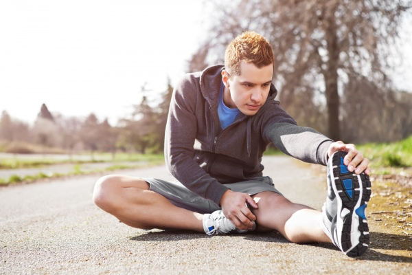

ЧОМУ БІГ – КОРИСНИЙ
Дослідники аналізували стиль життя 55 тисяч людей упродовж 15 років і з’ясували, що регулярні пробіжки продовжують життя на 3 роки.
"Все завдяки тому, що біг дає кардіонавантаження, які так потрібні для здоров’я серця", – пояснює очільниця міністерства охорони здоров'я Уляна Супрун.
За останніми дослідженнями, у людей, які регулярно бігають, ризик смерті від серцевих нападів та інсультів знижується на 45%, а передчасної смертності – на 30%.
Біг – простий і ефективний спосіб стабілізувати вагу та підтримувати тіло у формі.
Існує переконання, що біг може призвести до болю в колінах та зашкодити. Однак нейрохірург Вадим Ілляшенко, який не лише вивчає вплив бігу на опорно-руховий апарат, а й сам бере участь в марафонах та ультрамарафонах, пояснює, що це твердження не зовсім правильне.
"Помірна та регулярна фізична активність, в тому числі й біг, має захисний ефект для суглобів", – зазначає він.
Спеціаліст підтверджує: надмірні навантаження, які мають елітні професійні марафонці, все-таки збільшують ймовірність виникнення остеоартриту/остеоартрозу (руйнування хряща). Та якщо порівнювати людей, що ведуть сидячий спосіб життя, і бігунів-аматорів, то перші мають вищі ризики порушення хряща.
У бігунів колінний остеоартрит розвивається у 3 рази рідше. Дослідження здоров'я майже 75 000 бігунів і близько 15 000 людей, які займаються спортивною ходою, показало, що бігуни менш схильні до розвитку артриту. В іншому досліджені порівнювали стан хрящів колінних суглобів у бігунів-початківців та людей, що сидять понад міру.
Усього за 10 тижнів занять бігом в групі бігунів помітили позитивні зміни в структурі хрящів – а саме збільшення вмісту глікозаміногліканів, одного з основних структурних компонентів матриксу хряща.
"Поступове збільшення рівня бігового навантаження призводить до корисних адаптивних змін колінних хрящів та має хондропротективний ефект", – підсумовує нейрохірург Вадим Ілляшенко.
Часом бігуни можуть відчувати біль в колінах, не пов’язаний з остеоартритом. В будь-якому випадку варто обстежитися.
Точно не варто бігати, якщо у вас є протипоказання від лікаря.
ЯК ПІДГОТУВАТИСЯ ДО БІГУ
На початкових етапах ви цілком можете бути самі собі тренером – відео-, аудіо- та довідкових матеріалів з бігу вдосталь. Та якщо ви вирішили зайнятись бігом серйозно, проконсультуйтесь з лікарем. Якщо потрібно, зробіть необхідні обстеження.
За можливості, проконсультуйтесь з тренером. Це може бути, наприклад, кілька індивідуальних уроків або заняття з біговим клубом. В Україні останніх досить багато і вони мають мережі в різних містах (оберіть собі до вподоби будь-який за посиланням):
Спеціаліст допоможе визначити обсяги та інтенсивність тренувань та покаже правильну техніку.Не менш важливо підібрати правильні взуття та одяг для бігу. Обираючи речі, передусім звертайте увагу на їхнє призначення, якість та зручність.
Жінкам особливо уважно варто підійти до вибору спеціального спортивного бюстгальтера, аби попередити виникнення болю у грудях. Уважно поставтеся до свого раціону. Ознайомтеся з тим, що потрібно їсти до та після тренувань.
ЧИ ВАРТО РОБИТИ РОЗМИНКУ ТА ЗАМИНКУ
Прийнято вважати, що якщо людина не розминається до або після бігу, або й обидва рази, вона може легше травмуватися. Аматори перед пробіжкою зазвичай протягом 5-10 хвилин роблять щось схоже на шкільну зарядку. Професіонали – спеціальні вправи.
Фахівці дослідницької мережі Cochrane проаналізували 12 опитувань щодо їхнього ефекту. І дійшли висновку, що вправи на розтяжку не мали практично ніякого ефекту на зниження травматичності під час бігу.
Розтягування м'язів перед тренуванням не зменшує ризик їх пошкодження.
Наукова література уточнює, що функціональний рух є важливішим, ніж статичне розтягування, тому варто робити розтяжку активно. Наприклад, просто почати бігти легшим темпом. Розминатися чи ні, вирішувати вам. Ось справді хороші вправи для розтяжки м’язів.
Майте на увазі, що краще різко не зупинятися після бігу – плавно сповільнюйте частоту серцевих скорочень, щоб не було запаморочення чи нудоти.